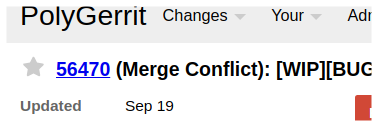
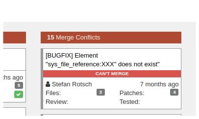

Resolve Merge conflicts¶
Important
This page has recently been added.
Please help by proofreading. If you find any issue that needs changing, click “Edit me on GitHub” on the top right corner of this page and add your suggestions.
For more information, see How to Contribute to Official Documentation.
For help, ask in #typo3-documentation on Slack (see https://my.typo3.org/index.php?id=35 to register).
What are merge conflicts?¶
Usually, git does a good job of merging several changes in one file.
However, there are occasions where git does not know what to do, because one change conflicts with another, meaning there are more than one possible way to merge.
This is actually a good thing.
In case of a merge conflict you will usually have these possibilities:
- Use change 1
- Use change 2
- Use a combination which you manually combine.
Example¶
Original file:
111
222
Change 1
111
aaa
222
Change 2
111
bbb
222
Git cannot resolve this automatically, because it is ambiguous. What should the result be?
Result 1
111
aaa
bbb
222
Result 2
111
bbb
aaa
222
The merge conflict markers (in the file) will show:
111
<<<<<<< HEAD
bbb
=======
aaa
>>>>>>> aaa
222
How to see merge conflicts in Gerrit or Forger¶
If your patch has merge conflicts. Gerrit as well as Forger will show you:
Gerrit:
Load your patch page in the browser.

Forger:
Open one of the ReviewSprint views on Forger.

In that case, you will need to resolve the conflicts in some way.
See next section How to resolve conflicts? for more information about resolving merge conflicts.
How to resolve conflicts?¶
Some git commands will show you that there are conflicts e.g. git cherry-pick,
git rebase, git pull --rebase etc. It will have inserted markers in the
files and ask you to resolve them and then continue.
You must resolve the conflict for all these files. There are several ways to do this.
Most editors or IDEs assist you in doing this. Check the information for your IDE.
Resolving the conflict, involves a 3-step process:
- Identify files with conflicts: the git commands usually show which files have conflicts, also your Editor or IDE should show you (PhpStorm does).
- Resolve the conflicts
- Resume: Depending on the command that was executed (e.g. rebase,
merge, cherry-pick), you will usually need to add the files and
call something like
rebase --continueorcherry-pick --continue
Identify files with conflicts¶
The command (e.g. git rebase) usually tells you which files have conflicts, e.g. git rebase gives us the following output:
CONFLICT (content): Merge conflict in typo3/sysext/install/Classes/Updates/ExtensionManagerTables.php
Identify files with conflicts (cherry-pick)¶
Unfortunately git cherry-pick is a little stubborn and does not
show you which files are concerned:
1 2 3 4 5 | $ git cherry-pick d48c3626d828de880342
$ > error: could not apply d48c362... bbb
$ > hint: after resolving the conflicts, mark the corrected paths
$ > hint: with 'git add <paths>' or 'git rm <paths>'
$ > hint: and commit the result with 'git commit'
|
However, git status will show you:
1 2 3 4 5 6 7 8 9 10 11 12 | $ git status
$ > On branch master
$ > You are currently cherry-picking commit 805a207.
$ > (fix conflicts and run "git cherry-pick --continue")
$ > (use "git cherry-pick --abort" to cancel the cherry-pick operation)
$ >
$ > Unmerged paths:
$ > (use "git add <file>..." to mark resolution)
$ >
$ > both modified: file_with_conflicts.txt
$ >
$ > no changes added to commit (use "git add" and/or "git commit -a")
|
All files shown with “both modified” will need to be attended to.
Resolve the conflicts¶
If you want to do it manually, look for all occurrences of <<<<<<<.
These are markers. They are used as follows (as in example above):
The merge conflict will show:
111
<<<<<<< HEAD
bbb
=======
aaa
>>>>>>> aaa
222
- Beginning of conflict:
<<<<<<<, after that name of branch for version 1 (here: HEAD) - Separation:
=======Marks end of version1 and beginning of version2 - End of conflict:
>>>>>>and then name of branch version 2.
There may be more than one conflict in a file!